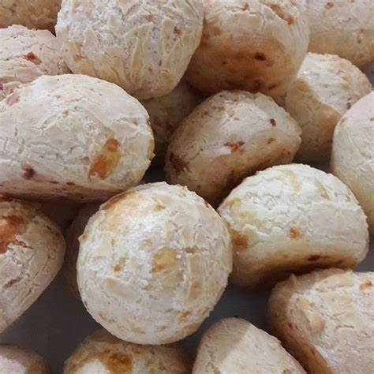
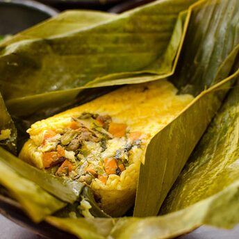

Tapioca
Tortillas de harina de yuca, típicas del noreste de Brasil, rellenas con queso o dulce de coco.
Ver Receta



Refuerzo de jamon y queso
Un sandwich de jamon y queso que por costumbre se le llama refuerzo.
Ver Receta